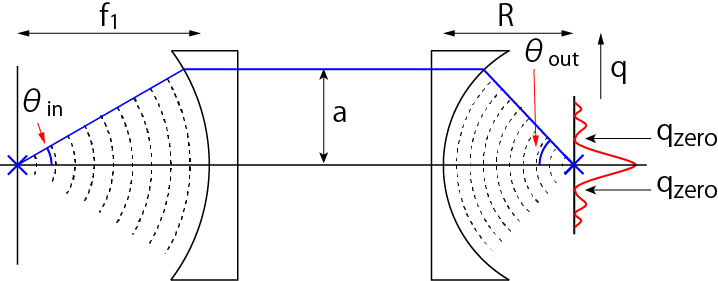
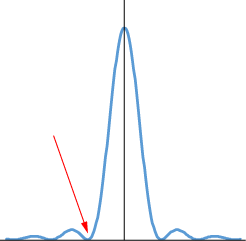
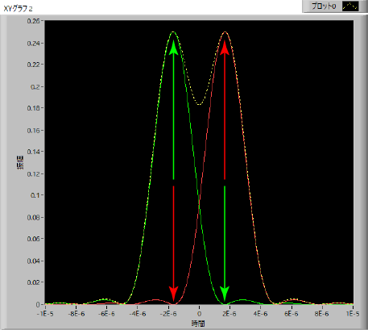

レンズによる集光-02
レンズのNAとの関係
今までの議論は，レンズによって集光された光はどのような強度分布を持つかでした．
次に，ある点から発せられた光の結像が倍率とどう関係するかを考えましょう．
藤田先生（阪大・工）にいろいろ教えていただきました，ありがとうございます．
ここで，無限遠の光学系を考えます（有限遠系は計算が難しそうなので．．．）

左側が焦点距離，f1，の対物レンズ，右側が焦点距離，R，の結像レンズとなります．
倍率は，ここ，で記したように，二つのレンズの焦点距離の比となります．
\(\Large M = \frac{R}{f_1} \)
また，焦点距離ではなく角度でも表すことができます（ここを参照）
\(\Large M = \frac{sin \ \theta_{out}}{sin \ \theta_{in}} \)
先ほど述べたように，結像面での強度分布は，
\(\Large I\propto \left[ \frac{J_1 (\frac{kaq}{R})}{\frac{kaq}{R}}) \right]^2 \)
となります．
次に，結像面の強度分布において，最初に強度が０となる位置を考えましょう．

分解能の定義は，
強度分布の最初の0となる位置だけ離れた2点間の距離なので，

つまり，
\(\Large \left[ \frac{J_1 (\frac{kaq}{R})}{\frac{kaq}{R}}) \right]^2 = 0 \)
となる位置，ｑ，なので，
\(\Large J_1 (\frac{kaq}{R}) = 0 \)
を考えればよいのです．
ベッセル関数においては，
\(\Large J_1 (3.83) = 0 \)
なので，
\(\Large \frac{kaq}{R} = 3.83 \)
となります．波数などを戻して，
\(\Large \frac{kaq}{R} = \frac{2 \pi}{\lambda} q \ sin \ \theta_{out} = 3.83 \)
\(\Large q_{zero} = 0.61 \frac{\lambda}{ \ sin \ \theta_{out}} \)
となります．次に実像との関係を調べていきましょう．